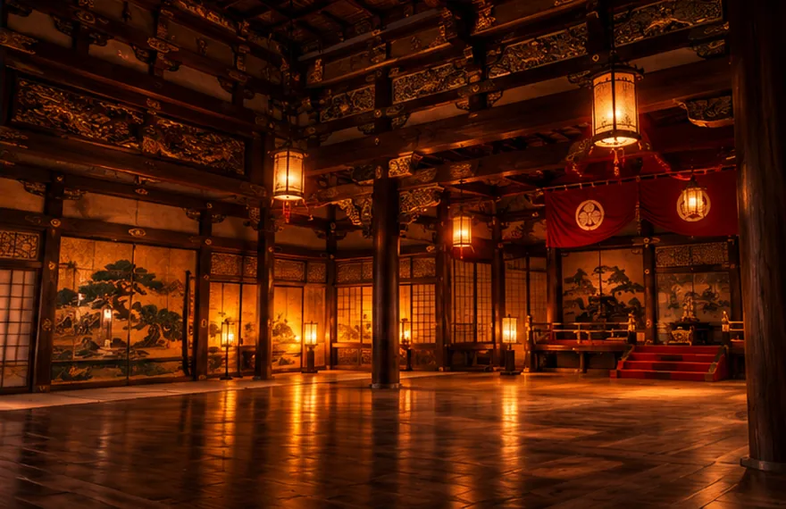

ŚWIAT SAMURAJÓW
Droga Miecza, Honoru i Przeznaczenia
Przenieś się do dawnej Japonii. Odkryj tajemnice rycerskiego stanu, interaktywną 15-slajdową prezentację edukacyjną oraz ikoniczne dzieła popkultury inspirowane duchem wojowników.



Filary Japońskiego Feudalizmu
Epoka Kamakura
1185 – 1333Ustanowienie pierwszego Szogunatu. Narodziny pozycji samuraja jako oficjalnej klasy rządzącej oraz powstrzymanie inwazji Mongołów.
W tym czasie rosło znaczenie samurajskich rodów w prowincjach, a rząd wojskowy w Kamakurze wspierał się siecią lokalnych zarządców. To był ważny etap w tworzeniu nowego porządku politycznego.
Sengoku Jidai
1467 – 1603Wojna Królestw. Era krwawych wojen domowych, zamków rycerskich, pojawienia się muszkietów oraz wielkich zjednoczycieli Japonii.
Wojny i rywalizacja między rodami zmieniały granice prowincji. Powstały miasta zamkowe, a armie coraz większą wagę przykładały do piechoty, organizacji zaopatrzenia oraz budowy fortyfikacji.
Epoka Edo
1603 – 1867Ponad 250 lat pokoju klanu Tokugawa. Przekształcenie wojowników w poetyckich urzędników, filozofów i patronów sztuki.
Długotrwały pokój sprzyjał kulturze miejskiej, teatrowi i drukowi. Wielu samurajów zajmowało stanowiska administracyjne, a ich codzienność coraz mocniej różniła się od życia dawnych wojowników.
„Historia samurajów uczy, jak zmieniały się władza, obowiązek i życie codzienne w dawnej Japonii.”
Myśl przewodnia portalu
Wybierz interesującą Cię podstronę
Każdy temat ma własną stronę z dłuższymi opisami, dodatkowymi informacjami i przykładami. Historia, postacie i kultura uzupełniają 15-slajdową prezentację.
 Historia i epokiDaty, zmiany ustrojowe i najważniejsze wydarzenia.
Historia i epokiDaty, zmiany ustrojowe i najważniejsze wydarzenia.
 BushidōSiedem cnót oraz ich historyczny kontekst.
UzbrojenieBroń, zbroje i rzemiosło dawnych mistrzów.
BushidōSiedem cnót oraz ich historyczny kontekst.
UzbrojenieBroń, zbroje i rzemiosło dawnych mistrzów.
 Ważne postacieWodzowie, wojowniczki i reformatorzy.
Ważne postacieWodzowie, wojowniczki i reformatorzy.
 KulturaHerbata, teatr, kaligrafia i życie codzienne.
PopkulturaGry, filmy i seriale z kontekstem historycznym.
KulturaHerbata, teatr, kaligrafia i życie codzienne.
PopkulturaGry, filmy i seriale z kontekstem historycznym.